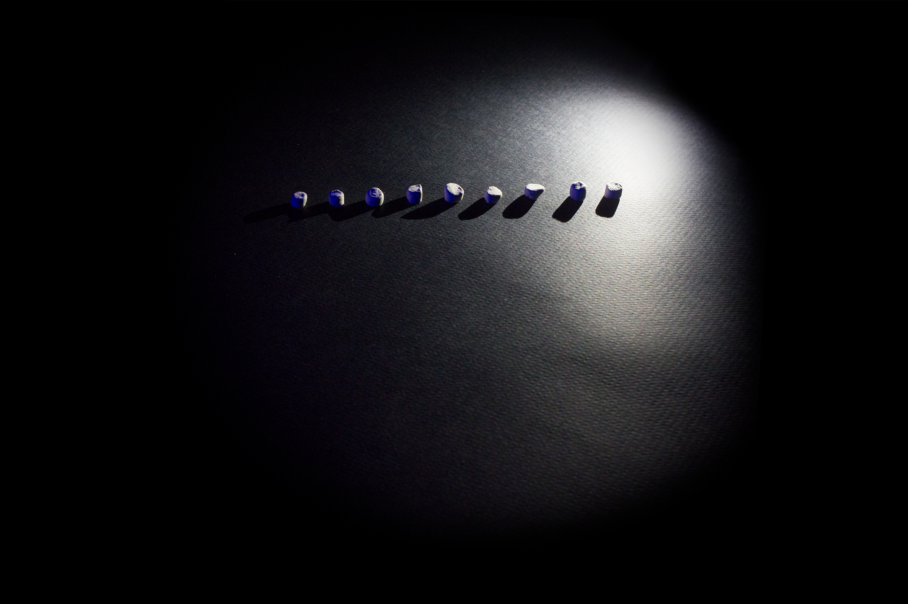
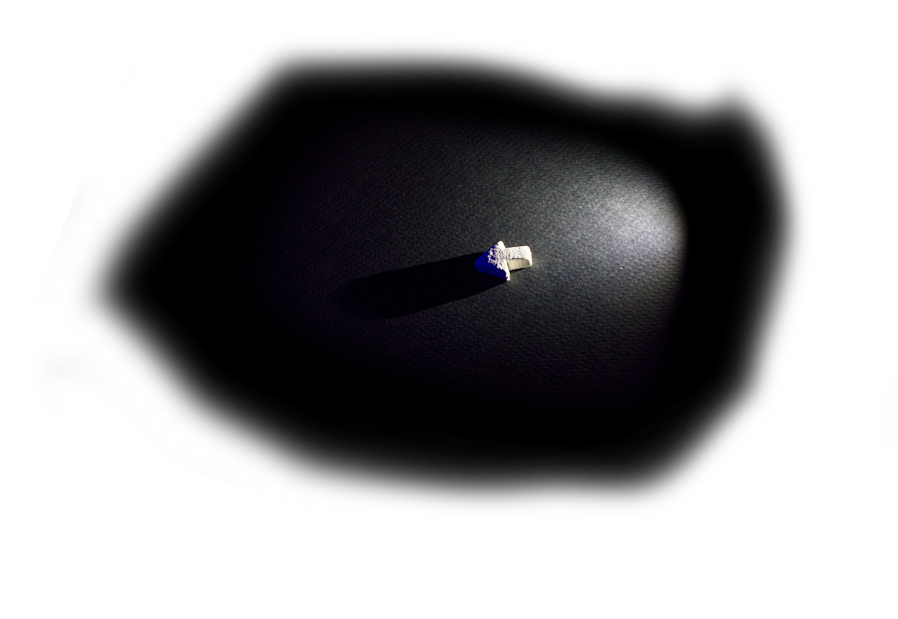
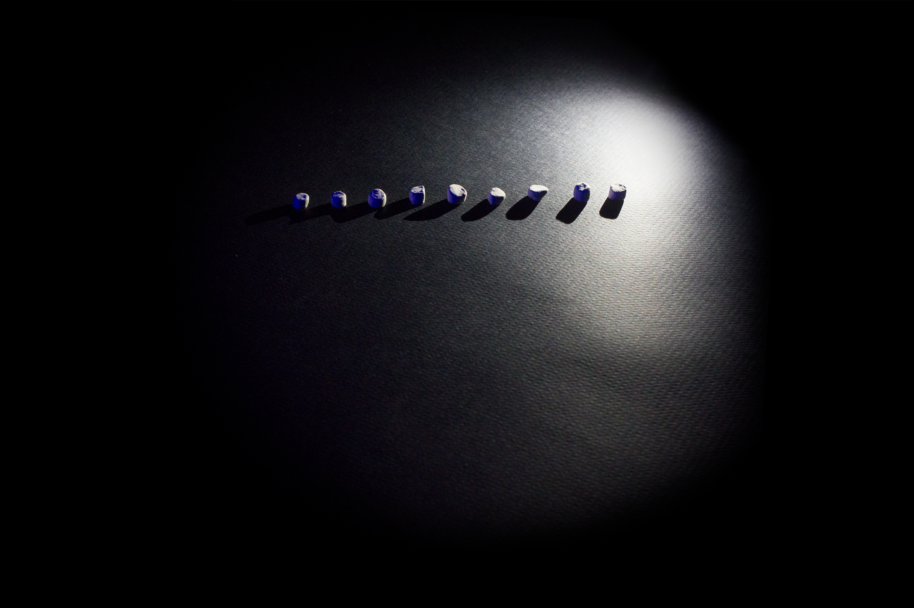
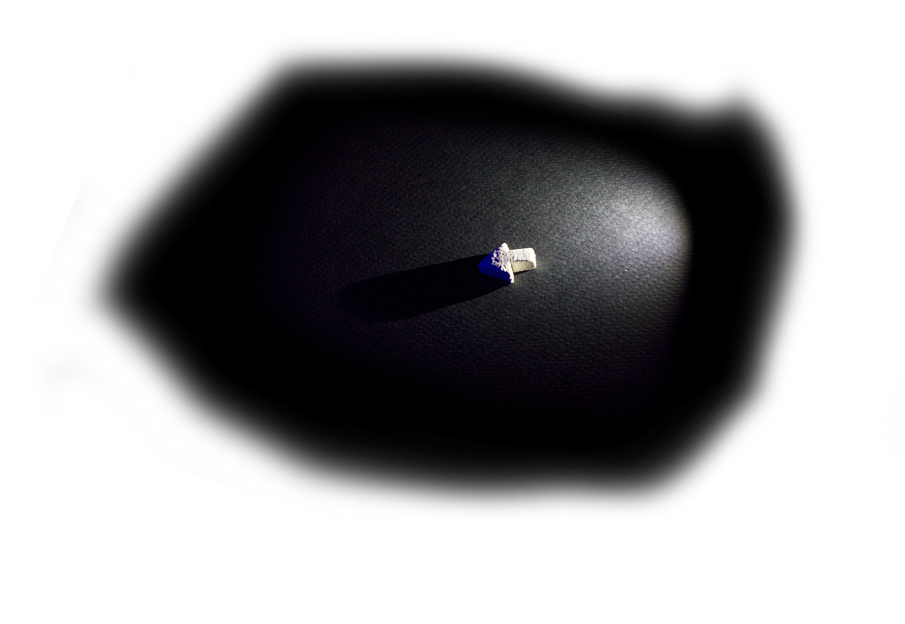
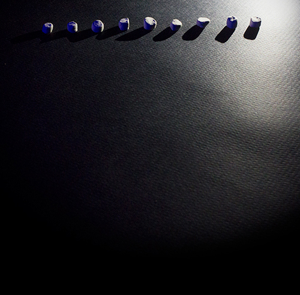

graphic
designer
“Pennyseats Fundraising Appeal" 2014
The Pennyseats is a theatre company local to Ann Arbor. When I was put in contact with them, they were a month away from launching a fundraising campaign for their fifth season, which began with the distribution of this video.
My graphic design experience prior to this project was in making posters for theatre productions. That process always began with the show in question. What symbols could be extracted? What visual mysteries set up? In those cases, my aim was to capture a viewer's attention by making them ask a question, which could only be answered by seeing the play. I developed my personal style with clarity in mind, which lent itself well to this assignment.
The two new challenges this project brought were 1) that these graphics had to move and 2) that I needed to be in constant communication with Lauren, the president of the company. This was my first exposure to a collaborative, brief-based project. The conceptual decision-making was completed up front, which made my job one of executing with precision what we had agreed upon.
When the campaign had finished, the Pennyseats more than met their goal for the new season, successfully securing a $10,000 grant from the Michigan Council for the Arts. In their proposal for the grant, they even referred to me as “a local artist” - a title I’m not sure I’ve earned, but which I will wear gladly nonetheless. Below are a selection of posters I've made in the past few years for high school and local theatre productions.
